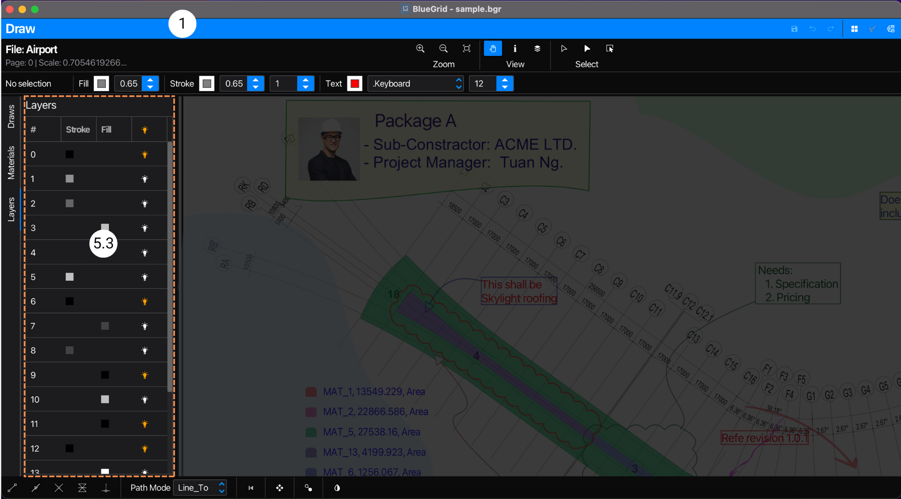

Application
This section provides an overview of the application, its user interface, and its components. Each component will be accompanied by a reference to its detailed documentation for usage instructions.
Application is the main window of BlueGrid, where users perform quantity take-off projects.
Operations within the application occur at the project level. This implies that any changes made within the application are applied directly to the project data. This project data is then stored within the project file.
User Interface
The application features an Application Tool Bar and 3 sub-views: Document View, Draw View, and Catalog View. At a given time, only one of these views is displayed. Users can switch between views using the Application Tool Bar.

Application Tool Bar
Navigation: Application | Application Tool BarThe Application Tool Bar is on the top of the application view and is always visible by default. From the Application Tool Bar, users perform common operations such as save, undo, redo, and switch to different sub-views of the application for various purposes.
Sub-view
Navigation: Application | Sub-viewSub-view can be either Document View, Draw View, or Catalog View. Each sub-view has its own functionalities and functions. All sub-views share the same project data. The Documents View is the default sub-view of the application when you open a project.
Document View
Navigation: Application | Document View
Documents View is the view of project construction blueprints of PDF folders and pages. The user interface is designed to facilitate the viewing of PDFs (as thumbnails) and provide simple yet powerful management of PDF blueprints.

Folders
Navigation: Application | Document View | Folders
Folders is provided with a list view that displays all PDF folders of the project. Users click a folder item in the list to open it. Once the folder is opened, all the PDF content is shown as thumbnails in a grid-view, referred to as Pages. To remove a folder from the list, select the folder item in the list, open Folders Menu, and select delete menu item.
Pages
Navigation: Application | Document View | Pages
Pages is provided with grid view that displays PDF pages in thumbnails of an opened folder. To open a page, user can either double-click the page thumbnail or select Open Menu in the Page Context Menu. To remove a page , users need to select the page thumbnail, then either open Pages Menu or right-click the page thumbnail to open context menu, and finally select Delete Pages menu item.
Folders menu
Navigation: Application | Document View | Folders | Folders menu
Folders menu is a feature that provides functions for managing PDF folders such as adding, deleting, renaming. To access the menu, users can either right-click the folder list view or click the menu button located in the top-right corner of the folder list view.
Pages menu
Navigation: Application | Document View | Pages | Pages menu
Pages menu is a feature that provides functions to managing PDF pages of an opened folder such as opening, deleting, appending, importing, exporting, and duplicating. To access the menu, users either click the menu button located in the top-right corner of the page list or right-click the page grid view to open the context menu. Users can also select multiple pages to perform batch operations.
Page thumbnails
Navigation: Application | Document View | Pages | Page thumbnails
Under-laying data of a page thumbnail is the page dataset, which consists of the PDF page, shapes, materials, annotations, and any additional data that users has added to the page. To open a page, users either double-click the page thumbnail or select Open option in the Page context menu. Upon opening a page, the application automatically switches to the Draw View, loads page dataset into this view.
Pages context menu
Navigation: Application | Document View | Pages | Page context menu
Pages context menu provides functionalities as Pages menu
Draw View
Navigation: Application | Draw View
Draw View is the centric interface of the application. It is where users perform quantity take-off, create and edit shapes, materials, tags, annotations, images...etc. When you open a page, the Draw View interface looks as follows:
Draw Tool Bar
Navigation: Application | Draw View | Draw Tool BarDraw Tool Bar is a toolbar that provides tools to operate on the Draw Canvas. The tools are categorized into 3 groups: Zoom, View, and Select.
Free Shape Format Tool Bar
Navigation: Application | Draw View | Free Shape Format Tool BarFree Shape Format Tool Bar is a toolbar that provides tools to style free shapes, texts and annotations. With these tools use can change style properties such as color, line width, opacity, font, font size, etc. of free shapes, texts and annotations. Tagged shapes are not affected by these tools. Tagged shapes are style by their styling tags such as materials.
Draw Canvas
Navigation: Application | Draw View | Draw CanvasDraw Canvas is the centric component of the Draw View, The Draw Canvas is a PDF viewer that displays PDF the opened PDF page. The Draw Canvas is also a drawing board that allows users to draw shapes, add notes, annotations and images, tag and untag materials...etc. The Draw Canvas is where users perform quantity take-off by drawing shapes and the application compute their metric properties such length, area, volume and of course counting. The data in Draw Canvas is at page level.
Left Panel
Navigation: Application | Draw View | Left PanelLeft Panel is a panel that allows users to switch to between tab panes of the Draw View. These tabs contain tools and data that co-relate to Draw Canvas's data. The data displayed is at page level. There are 3 tabs: Draw Tab, Material Tab, and Layer Tab.
Draws TabPane
Navigation: Application | Draw View | Left Panel | Draws TabPaneDraws TabPane5.1is displayed when user select Draws tab in the Left Panel, as follows:
Draws TabPane is a tab pane that contains tools to draw shapes, add notes, annotations and images...etc. In Draw TabPane there are 4 tool sets:

- Shape Tools allow users to draw 2D shapes that are used to compute metric values such as length, area, and volume. Shapes created using these tools are of Metric class and can be tagged to materials.
- Modify Tools allow users to change 'native' data of shapes, e.g: to remove points from a polygon, to insert points to polygon. These tools are not used to add shapes or annotations.
- Annotation Tools allow users to add texts, annotations such as arrow, callouts, clouds, images..etc. Objects created using these tools are not of Metric class and can not be tagged to materials.
- Symbol Tools is a dynamic tool set that user can to add, remove, or customize tools. These tools allow users to add blocked shapes which can not be changed 'natively'. Shapes added using these tools are of Metric class can also be used as counting when tagged to materials.
Materials TabPane
Navigation: Application | Draw View | Left Panel | Materials TabPaneMaterials TabPane
5.2is displayed when user select Materials tab in the Left Panel, as follows:
Material TabPane is a tab pane that contains material table that will be used to apply/tag to shapes. Once shapes are tagged to with a material, the shape style is bound to the material's style. The quantity of the material is the sum of all shapes metric values that are tagged with it. Please take notes that users should trigger Compute Button to compute the quantity of the material. The material table is at page level.
Layers TabPane
Navigation: Application | Draw View | Left Panel | Layers TabPaneLayers TabPane
5.3is displayed when user select Layers tab in the Left Panel, as follows:
Layers TabPane is a tab pane that contains layer table that will be used to manage rendering objects in the PDF page by turning on/off layers. This feature will be useful when the PDF page has many layers and users want to focus on specific layers as well as to reduce noise.
Bottom Bar
Navigation: Application | Draw View | Bottom BarBottom Bar is a bar that provides additional assisting options to the tool that is being used. For example, when user select a draw tool to draw shapes, users can select options of point snaps on the Bottom Bar to assist drawing shapes precisely.